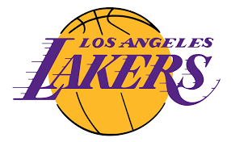

Los Angeles Lakers son un equipo profesional de baloncesto de los Estados Unidos con sede en Los Ángeles, California. Compiten en la División Pacífico de la Conferencia Oeste de la National Basketball Association (NBA) y disputan sus partidos como locales en el Staples Center, ubicado en el downtown de la ciudad.
Los Lakers se clasificaron para playoffs como primero del Oeste, siendo campeón de la División Pacífico por primera vez desde 2012, y LeBron fue líder de la temporada en asistencias, con 10.2 por partido. Los Lakers después de terminar todos sus playoffs ganándolos por 4-1, acceden a las finales 2020 contra Miami Heat por primera vez, entre ambas escuadras. El 11 de octubre de 2020 se proclama campeón de la NBA por decimoséptima vez, tras vencer a Miami Heat en la final de la NBA igualando así el récord de Boston Celtics, donde LeBron James fue MVP de las Finales.
Diecisiete jugadores miembros del Basketball Hall of Fame han jugado en los Lakers, mientras otros cuatro han entrenado al equipo. Cuatro lakers —Kareem Abdul-Jabbar, Magic Johnson, Shaquille O'Neal y Kobe Bryant— han conseguido ganar el MVP de la Temporada de la NBA, para un total de 11 galardones.
 Indice
Indice